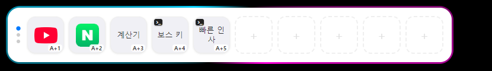
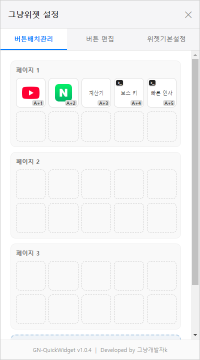
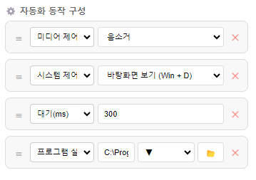
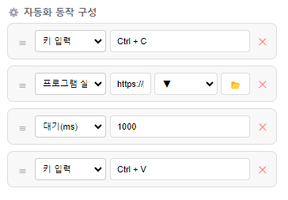

복잡한 설정은 끝. 드래그 앤 드롭으로 1초 만에 등록하고, 강력한 자동화 루틴을 경험하세요.
⬇️ Windows용 무료 다운로드 최신 버전 자동 업데이트 지원 (Windows 10/11 전용)

"이런 위젯이 있으면 좋겠다"는 생각 하나로, 비개발자가 AI(제미나이)와 대화만으로 기획부터 배포까지 완성했습니다.
전문적인 개발 툴이나 복잡한 환경 설정 없이, 오직 질문과 복붙(?)으로 만들어낸 이 즐거운 도전의 결과물이 여러분의 데스크탑 환경에 작은 편안함을 주길 바랍니다.
있는 듯 없는 듯, 하지만 필요할 땐 확실하게 돕습니다.
바탕화면의 바로가기나 실행 파일을 위젯에 끌어다 놓기만 하세요. 이름과 아이콘이 자동으로 추출되어 1초 만에 등록됩니다.
작업 환경을 방해하지 않게 평소엔 투명하게 스며들고, 찾을 땐 배경 이펙트로 단번에 위치를 파악할 수 있는 섬세한 UI를 제공합니다.
마우스 클릭 없이 지정한 전역 단축키로 버튼을 실행할 수 있습니다. 위젯 바 위에서 휠을 굴려 크기와 페이지를 바로 조절하세요.
단순한 바로가기가 아닙니다. 텍스트 복사, 대기, 단축키 입력 등을 조합해 나만의 매크로를 만드세요.


GN-QuickWidget이 유용하셨다면 1인 개발자에게 시원한 커피를 사주세요!
다음 업데이트를 위한 아주 큰 원동력이 됩니다. 😊